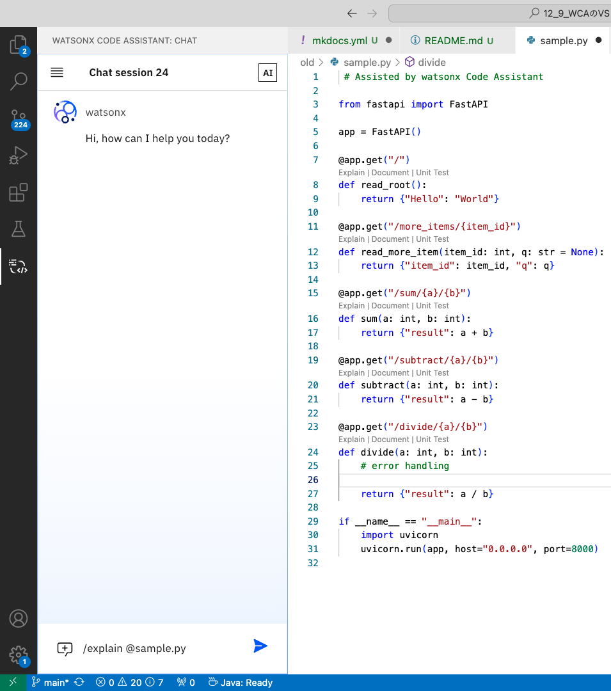
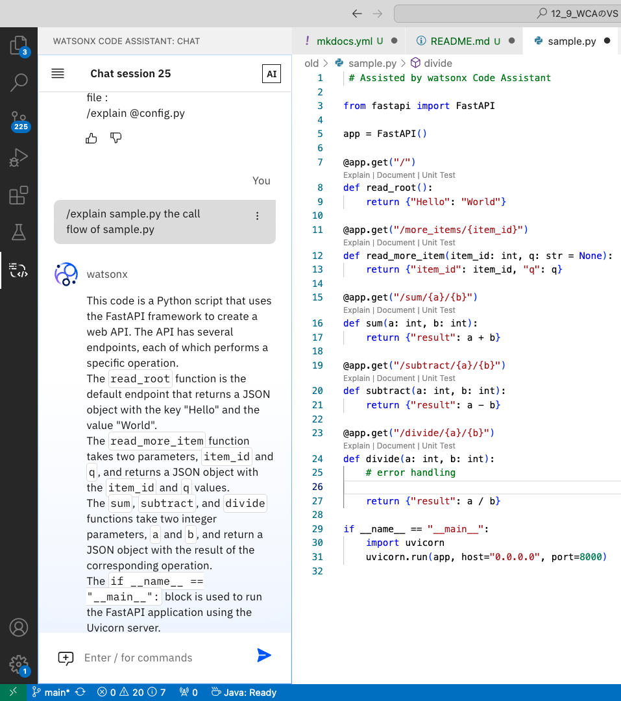
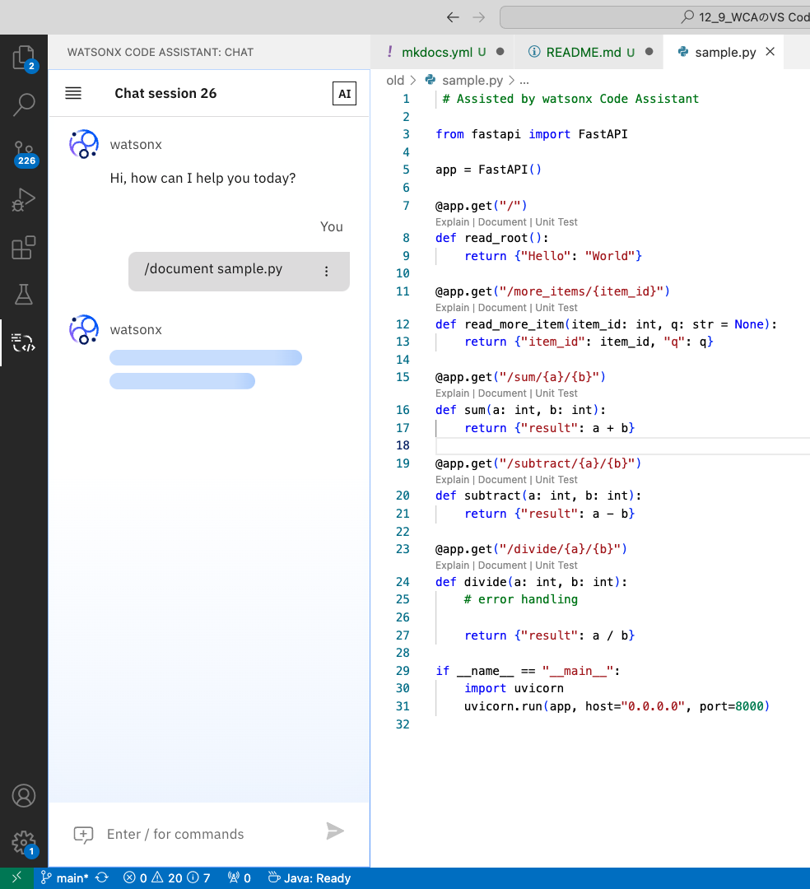
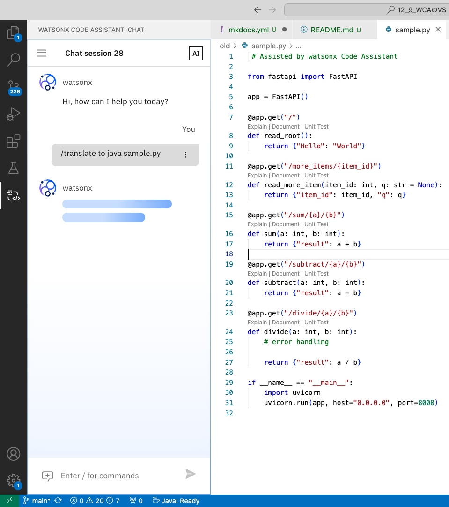
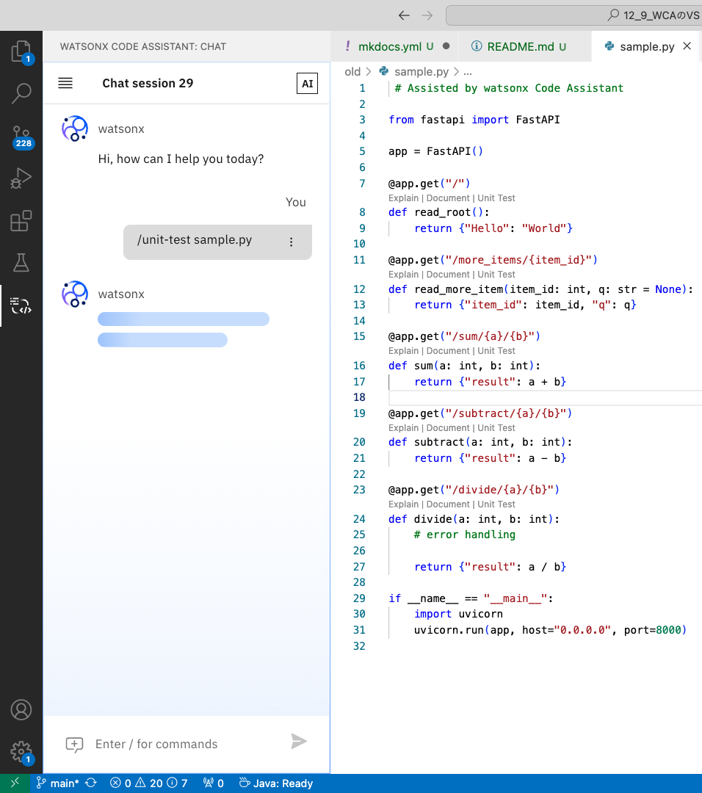

Lab2: コマンドを使用した種々の機能
このページでは、Lab3を完了するための手順を順を追って説明しております。
Lab2 の範囲:
- チャット画面でのコマンド入力による、コードの説明、ドキュメント追加、UT生成など
注意点
- 生成 AI の特性上、コード提案生成にはバリエーションが含まれる場合があり、これは、生成される提案コードは毎回完全に同一ではない可能性があることを指しております。
- チャットは会話の履歴をコンテキストとして受け取ります。そのため、メリットとしては、フォローアップの質問ができるという点が挙げられます。しかし、プロンプトの出力にも影響を与える可能性があります。そのため、出力が望ましくない場合は、チャットセッションを新規に作成してください。以下のボタンを使用します:
ヒント
- 新しいチャットセッションを開始すると、明確な文脈が得られ、より良い結果につながります。
- 使用していないチャットセッションを削除することで整理できます。
- 簡単な指示でコード提案は生成されるため、シンプルな指示であることが望ましいです。
1. コードを説明する
チャット画面で、/explainコマンドを使用すると、アクティブなワークスペースで参照されているクラス・ファイル・関数・メソッドの単位でコードを説明することができます。
次の構文を利用します。
<code reference> に対して、@シンボルを入力すると、ワークスペースのクラス、ファイル、関数、メソッドのリストが表示されます。
一度に1つのクラス、ファイル、関数、メソッド参照を使用することができます。
チャット画面を開き、以下のコマンドを入力します。

実行例は以下の通りです。
This code is a Python script that uses the FastAPI framework to create a web API. It defines several routes that respond to HTTP GET requests. The routes are used to perform various operations on two numbers, such as addition, subtraction, and division. The code also includes error handling for division by zero.
The read_root function is the default route that returns a JSON object with the key "Hello" and the value "World".
The read_more_item function takes an item_id parameter and an optional q parameter. It returns a JSON object with the item_id and q values.
The sum, subtract, and divide functions take two parameters, a and b, and return a JSON object with the result of the corresponding operation.
The if __name__ == "__main__": block is used to run the FastAPI application using the Uvicorn server. It binds the application to the host "0.0.0.0" and port 8000.
Overall, this code provides a simple example of how to create a web API using FastAPI and Python.
また、特定の詳細が必要な場合は、指示を追加することができます。
チャット画面に以下のコマンドを入力します。

実行例は以下のとおりです。
This code is a Python script that uses the FastAPI framework to create a web API. The API has several endpoints, each of which performs a specific operation.
The read_root function is the default endpoint that returns a JSON object with the key "Hello" and the value "World".
The read_more_item function takes two parameters, item_id and q, and returns a JSON object with the item_id and q values.
The sum, subtract, and divide functions take two integer parameters, a and b, and return a JSON object with the result of the corresponding operation.
The if __name__ == "__main__": block is used to run the FastAPI application using the Uvicorn server.
The call flow of this code would be as follows:
The user makes a GET request to the root endpoint ("/").
The read_root function is called and returns a JSON object with the key "Hello" and the value "World".
The user makes a GET request to the "/more_items/{item_id}" endpoint, providing a value for the item_id parameter.
The read_more_item function is called with the provided item_id and q parameters, and returns a JSON object with the item_id and q values.
The user makes a GET request to the "/sum/{a}/{b}" endpoint, providing values for the a and b parameters.
The sum function is called with the provided a and b parameters, and returns a JSON object with the result of the addition.
The user makes a GET request to the "/subtract/{a}/{b}" endpoint, providing values for the a and b parameters.
The subtract function is called with the provided a and b parameters, and returns a JSON object with the result of the subtraction.
The user makes a GET request to the "/divide/{a}/{b}" endpoint, providing values for the a and b parameters.
The divide function is called with the provided a and b parameters, and returns a JSON object with the result of the division.
Note that the divide function includes error handling, which means that if the user attempts to divide by zero, the function will return an error message instead of crashing.
2. ドキュメント作成
コードの内容から、何を行なっているかを文書化するコメント行を追加するコマンドを使用できます。
Pythonでは、Markdown形式に従ったコメントが生成されます。
次の構文を利用します。
<code reference> に対して、@シンボルを入力すると、ワークスペースのクラス、ファイル、関数、メソッドのリストが表示されます。
一度に1つのクラス、ファイル、関数、メソッド参照を使用することができます。
チャット画面を開き、以下のコマンドを入力します。

実行例は以下のとおりです。
# Assisted by watsonx Code Assistant
//sample.py
from fastapi import FastAPI
app = FastAPI()
@app.get("/")
def read_root():
"""
Returns a greeting message.
Returns:
dict: A dictionary with a "Hello" key and a "World" value.
"""
return {"Hello": "World"}
@app.get("/more_items/{item_id}")
def read_more_item(item_id: int, q: str = None):
"""
Returns information about a specific item.
Args:
item_id (int): The ID of the item to retrieve.
q (str, optional): A query string to filter the results. Defaults to None.
Returns:
dict: A dictionary with the item ID and query string as keys.
"""
return {"item_id": item_id, "q": q}
@app.get("/sum/{a}/{b}")
def sum(a: int, b: int):
"""
Returns the sum of two numbers.
Args:
a (int): The first number.
b (int): The second number.
Returns:
dict: A dictionary with a "result" key and the sum of the two numbers as the value.
"""
return {"result": a + b}
@app.get("/subtract/{a}/{b}")
def subtract(a: int, b: int):
"""
Returns the difference between two numbers.
Args:
a (int): The minuend.
b (int): The subtrahend.
Returns:
dict: A dictionary with a "result" key and the difference between the two numbers as the value.
"""
return {"result": a - b}
@app.get("/divide/{a}/{b}")
def divide(a: int, b: int):
"""
Returns the quotient of two numbers.
Args:
a (int): The dividend.
b (int): The divisor.
Returns:
dict: A dictionary with a "result" key and the quotient of the two numbers as the value.
"""
# error handling
return {"result": a / b}
if __name__ == "__main__":
import uvicorn
uvicorn.run(app, host="0.0.0.0", port=8000)
3. コード翻訳
ある言語から異なる言語へのコード翻訳をコマンドで行うことができます。
次の構文を利用します。
/translate [from <source_language>] to <target_language> (<code reference> | <code snippet>) [additional instructions]
<code reference> に対して、@シンボルを入力すると、ワークスペースのクラス、ファイル、関数、メソッドのリストが表示されます。
一度に1つのクラス、ファイル、関数、メソッド参照を使用することができます。
TypeScript、Java ScriptではJavaScript ように、スペースを入れずに完全な言語名を指定する必要があります。
チャット画面を開き、以下のコマンドを入力します。

実行例は以下のとおりです。
// Assisted by watsonx Code Assistant
//sample.java
import io.swagger.v3.oas.annotations.OpenAPIDefinition;
import io.swagger.v3.oas.annotations.info.Info;
import io.swagger.v3.oas.annotations.servers.Server;
import org.springframework.boot.SpringApplication;
import org.springframework.boot.autoconfigure.SpringBootApplication;
import org.springframework.web.bind.annotation.GetMapping;
import org.springframework.web.bind.annotation.RequestParam;
import org.springframework.web.bind.annotation.RestController;
@SpringBootApplication
@RestController
@OpenAPIDefinition(
info = @Info(
title = "sample API",
version = "0.0.1",
description = "A sample API"
),
servers = @Server(url = "http://localhost", description = "Local server")
)
public class SampleApplication {
@GetMapping("/")
public String readRoot() {
return "Hello World";
}
@GetMapping("/more_items/{item_id}")
public String readMoreItem(@RequestParam int item_id, @RequestParam(required = false) String q) {
return "item_id: " + item_id + ", q: " + q;
}
@GetMapping("/sum/{a}/{b}")
public String sum(@RequestParam int a, @RequestParam int b) {
return "result: " + (a + b);
}
@GetMapping("/subtract/{a}/{b}")
public String subtract(@RequestParam int a, @RequestParam int b) {
return "result: " + (a - b);
}
@GetMapping("/divide/{a}/{b}")
public String divide(@RequestParam int a, @RequestParam int b) {
// error handling
return "result: " + (a / b);
}
public static void main(String[] args) {
SpringApplication.run(SampleApplication.class, args);
}
}
4. テストケースの生成
チャット、エディタ、またはコマンドから様々なプログラミング言語の単体テストを生成できます。
チャット画面で /unit-test コマンドを使用すると、アクティブなワークスペースで参照されているクラス、ファイル、関数、メソッドのテストを生成することができます。
<code reference> に対して、@シンボルを入力すると、ワークスペースのクラス、ファイル、関数、メソッドのリストが表示されます。
一度に1つのクラス、ファイル、関数、メソッド参照を使用することができます。
次の構文を利用します。
<code reference> に対して、@シンボルを入力すると、ワークスペースのクラス、ファイル、関数、メソッドのリストが表示されます。
一度に1つのクラス、ファイル、関数、メソッド参照を使用することができます。
チャット画面を開き、以下のコマンドを入力します。

実行例は以下のとおりです。
# Assisted by watsonx Code Assistant
import unittest
from sample import app
class TestFastAPI(unittest.TestCase):
def test_root(self):
client = app.test_client()
response = client.get("/")
self.assertEqual(response.status_code, 200)
self.assertEqual(response.json(), {"Hello": "World"})
def test_more_item(self):
client = app.test_client()
response = client.get("/more_items/123")
self.assertEqual(response.status_code, 200)
self.assertEqual(response.json(), {"item_id": 123, "q": None})
response = client.get("/more_items/123?q=test")
self.assertEqual(response.status_code, 200)
self.assertEqual(response.json(), {"item_id": 123, "q": "test"})
def test_sum(self):
client = app.test_client()
response = client.get("/sum/1/2")
self.assertEqual(response.status_code, 200)
self.assertEqual(response.json(), {"result": 3})
def test_subtract(self):
client = app.test_client()
response = client.get("/subtract/10/2")
self.assertEqual(response.status_code, 200)
self.assertEqual(response.json(), {"result": 8})
def test_divide(self):
client = app.test_client()
response = client.get("/divide/10/2")
self.assertEqual(response.status_code, 200)
self.assertEqual(response.json(), {"result": 5.0})
response = client.get("/divide/10/0")
self.assertEqual(response.status_code, 500)
self.assertEqual(response.json(), {"detail": "division by zero"})
if __name__ == "__main__":
unittest.main()
以上です。